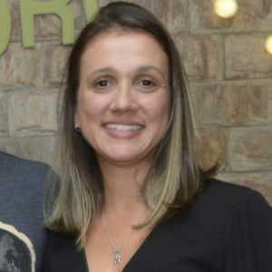

COMPETÊNCIAS E PESQUISA
Caracterização e análise
Isolamento de metabólitos bioativos e desenvolvimento de metodologias analíticas e preparativas, incluindo cromatografia contracorrente e transferência de métodos entre escalas.
 IPPN / UFRJPesquisa & colaboraçãoConectar uma demanda
IPPN / UFRJPesquisa & colaboraçãoConectar uma demandaProfessora Adjunta · IPPN / UFRJ
Isolamento de metabólitos bioativos e desenvolvimento de metodologias analíticas e preparativas, incluindo cromatografia contracorrente e transferência de métodos entre escalas.

COMPETÊNCIAS E PESQUISA
Isolamento de metabólitos bioativos e desenvolvimento de metodologias analíticas e preparativas, incluindo cromatografia contracorrente e transferência de métodos entre escalas.
POSSÍVEL COLABORAÇÃO
Estudar processos de separação e recuperação de compostos de interesse em extratos e resíduos de frutas.
A viabilidade, o escopo e as condições de colaboração devem ser discutidos com o docente.
CONTATO & REFERÊNCIAS
Descreva a amostra, o problema e o objetivo do estudo para iniciar a avaliação científica.
Conversar sobre uma colaboraçãoConteúdo preparado para revisão pelo docente. As aplicações são propostas editoriais fundamentadas no perfil científico, sujeitas à definição conjunta do projeto.
Voltar ao quadro docente